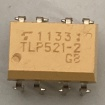
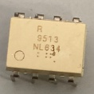
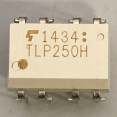
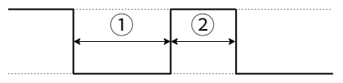

前提条件等
制御に関するお勉強・開発のHome
基本的にC言語を用いる。一部C++などの他の言語の知識が混ざる可能性もある。
環境構築等はすでに済んでいるものとし、コードの内容のみになることがある。
各開発などのリポジトリは各ページに掲載していることもある。あくまで参考程度にしかならない。
自分で調べ、データシートなどを確認することがとても大事である。
使用環境
- Windows11 Home
使用/使用予定のマイコン・マイコンボード一覧
モーターのPWM制御
PWMとは
PWMとは、Pulse Width Modulationの略でパルス幅変調という。一定周期の中で出力がHIGHの長さとLOWの長さ比(デューティ比)で出力が決まる。
出力が
5Vでデューティ比が25%であれば、出力は1.25Vになる。出力電圧は以下の式で求められる。
(出力電圧) = (最大電圧) × (デューティ比)
そのため、デューティ比が小さすぎると素子によってはデューティ比0％とあまり変わらない結果が得られるものもある。各素子の最低電圧などを確認すること。
モーターを回す
回路的には以下のようになっている。

モーターの動作電圧が12Vでマイコンからの信号の電圧が5Vか3.3Vなので電圧を上げる必要がある。それをフォトカプラ基板で信号のやり取りを行っている。また、PWMの周期を83[μs]に設定する。これはモタドラICの周波数が12[kHz]あたりがいいらしいからだ(モタドラICHIP4081AIPZ)。
フォトカプラによる動作の違い
| フォトカプラ | 部品 | 用途 | 向き |
|---|---|---|---|
| TLP621 |  | ディジタルの変換 | 左下にある◯がマイコン側 |
| TLP521-2 |  | ディジタルの変換×2 | 左下にある◯がマイコン側または、角が削れている方がマイコン側 |
| PS9513 |  | PWMの変換 | 左下にある◯がマイコン側 |
| TLP250H |  | PWMの変換 | 左下にある◯がマイコン側または、角が削れている方がマイコン側 |
注意点
TLP521-2はPWMの変換と同じような大きさだが内部の配線ではTLP621が2個あるような配置になっている。PWMの変換には使用できないので注意。PS9513を標準とするとTLP250Hは出力が反転している。例えば、入力に0が入っている場合PS9513では出力が0だが、TLP250Hでは255が出力される。使用するフォトカプラに合わせてコードを書き換える必要がある。
左回りと右回り(正転と反転)
| PWM側フォトカプラ | Digi | LOWの時のデューティ比 | HIGHの時のデューティ比 | 回転方向 | 出力波形部分 |
|---|---|---|---|---|---|
| PS9513 | 0 | 0 | 255 | 左回り | ① |
| PS9513 | 1 | 255 | 0 | 右回り | ② |
| TLP250H | 0 | 255 | 0 | 左回り | ② |
| TLP250H | 1 | 0 | 255 | 右回り | ① |
出力波形

参考
通信の仕組み
通信モジュール
現在(2025/03/12)は、双葉電子のFEP02TJを主に使用している。(FEP-02)
周波数帯は920MHz帯で無線モジュール。UARTを用いた通信が可能。部のほとんどのものがボードレート38400bit/sに設定されている。
RXとTX
マイコンボードのピン配置などでUART1_RXやUART2_TXなどと書いてあるものを見たことがあると思う。RXはReceiveの略でTXはTransmitの略でそれぞれ受信する、送信するという意味だ。無線モジュールを使用しない場合の多くはArduinoなどの送信側のTXとF446REなどの受信側のRXをつなぎ送受信する。
送信側
主にArduino Uno Rev3にUSB Host Shieldを接続し、USB Host ShieldにDUALSHOCK4などのコントローラーを接続し、Arduinoでコントローラーのデータを読み取りそれをシリアル通信を用いて受信側に送る。受信データは以下の表の内容になって全てで11byteある。
| byte数 | data | 説明 |
|---|---|---|
| 0byte | 0xaf | 先頭データを表す |
| 1byte | unsigned char | LアナログスティックのX座標 |
| 2byte | unsigned char | LアナログスティックのY座標 |
| 3byte | unsigned char | RアナログスティックのX座標 |
| 4byte | unsigned char | RアナログスティックのY座標 |
| 5byte | unsigned char | L2アナログボタン |
| 6byte | unsigned char | R2アナログボタン |
| 7byte | unsigned char | ディジタルボタンセット1 |
| 8byte | unsigned char | ディジタルボタンセット2 |
| 9byte | unsigned char | チェックサム用SUM |
| 10byte | 0xed | 終端データを表す |
ディジタルボタンセット1
| bit数 | data | 説明 |
|---|---|---|
| 0bit | 0/1 | TRIANGLE |
| 1bit | 0/1 | CIRCLE |
| 2bit | 0/1 | CROSS |
| 3bit | 0/1 | SQUARE |
| 4bit | 0/1 | UP |
| 5bit | 0/1 | RIGHT |
| 6bit | 0/1 | DOWN |
| 7bit | 0/1 | LEFT |
ディジタルボタンセット2
| bit数 | data | 説明 |
|---|---|---|
| 0bit | 0/1 | L1 |
| 1bit | 0/1 | L3 |
| 2bit | 0/1 | R1 |
| 3bit | 0/1 | R3 |
| 4bit | 0/1 | SHARE / SELECT |
| 5bit | 0/1 | OPTIONS / START |
| 6bit | 0/1 | PS |
| 7bit | 0/1 | TOUCHPAD / N/A |
N/A:なし
SHARE,OPTIONS,TOUCHPADはDUALSHOCK4の場合、SELECT,START,N/AはDUALSHOCK3の場合。
ボタンセットはボタンが押されている時に各bitが1になるようにしている。
| bit数 | 16進数表記 | 2進数表記 |
|---|---|---|
| 0bit | 0x01 | 0000 0001 |
| 1bit | 0x02 | 0000 0010 |
| 2bit | 0x04 | 0000 0100 |
| 3bit | 0x08 | 0000 1000 |
| 4bit | 0x10 | 0001 0000 |
| 5bit | 0x20 | 0010 0000 |
| 6bit | 0x40 | 0100 0000 |
| 7bit | 0x80 | 1000 0000 |
チェックサム用SUM
SUM = (LアナログスティックのX座標) + (LアナログスティックのY座標) + (RアナログスティックのX座標) + (RアナログスティックのY座標) + (L2アナログボタン) + (R2アナログボタン) + (ディジタルボタンセット1) + (ディジタルボタンセット2)
受信側
NUCLEO-F446REなどでFEPを通してArduinoから送られてきたデータはある処理をされて使用するデータに格納される。その処理はざっくり言うと以下の図のような処理になる。

各環境や言語によって使われる関数などは違うがだいたいはこのような感じの処理をしている。
各環境の受信側ライブラリ(現在あるもの)
ボタンセットの値の読み取り方
送信側ではボタンが押されたらbit論理和代入をしている。例えば0x10と0x04のボタンが押されている場合は0001 0000 + 0000 0100 = 0001 0100になる。そうすると送信側では、0x14が送信される。受信側では各ボタンの判定を行えば良く、ボタンが押されているかどうかは論理積を用いる。0x10の場合は0x14 ・ 0x10 = 0x10になる。このようにしてボタンの状態を読み取る。
STMマイコン
基本的にNUCLEO-F446REを用いた。また、開発環境にはSTM32CubeIDEを使用した。開発環境には他にもKeil StudioやPlatformIOなどもあるが未着手または、継続不可の可能性があるものである。
Raspberry Pi Pico
開発環境にはArduinoIDEを用いた。
PlatformIO
2025Team_BはKeil Studioを使用した制御プログラムの作成を辞め、他の開発環境への以降を考えている。Mbedのサポート終了が宣言されたからである。記事
Platform IOを入れる
PlatformIOはArduinoIDEでの書き方やKeil Studioでの書き方などいろいろな書き方ができる。そしてこれはVSCodeの拡張機能なので比較的導入が簡単なものである。
この拡張機能を使用して試しにコードを書き込むまでの記録。
学内LANでは極力ダウンロードなどはしないようにしよう
学内LANで
PlatformIOのセッティングを行うためにはVSCode自体のプロキシ設定が必要になる。
Ctrl + ,で設定を開き、設定の検索バーでproxyと入力。Http: Proxy(すべてのプロファイルに適用)を探し、プロキシサーバーを入力する欄に学内LANのプロキシサーバー(http://サーバーアドレス:ポート番号)を入力し、保存し終わったらVSCodeの再起動を行う。
VSCodeで拡張機能のマーケットプレイスで、PlatformIO IDEをインストールする。platformio.platformio-ideこれを検索バーに入力するか、platformとか検索する。link
インストール中にPlatformIO: Can not find working Python 3.6+ Interpreter. Please install the latest Python 3 and restart VSCodeこんな表示がでてくるかもしれない。これはPython 3.6以上が見つかりませんって言われているだけ。Pythonをインストールしていない人はInstall Pythonを押してサイトからWindows用をダウンロードする。もうインストールしてある人はI have Pythonてきなところを押せばいいと思われ。僕はインストールしてなかったからインストールする。
Pythonのインストーラーをダウンロードしたら、Pythonのインストーラーを実行。下のチェックボックス欄のAdd Python.exe to PATHにチェックを入れる。Use admin privileges when installing py.exeのチェックは管理者権限ですべてのユーザーにインストールするみたいな項目だから、チェックしてなくて問題ない。チェックが終わったらInstall Nowを押してインストールする。
Setup was SuccessfulがでたらCloseを押してもよいけど、Disable path length limitっていう項目が残っている。これはパスの長さの制限をなくしますか？っていう項目だから押しておけば今後何も考えなくていい。幼くても別に問題はないかも。(僕は押した)
そしたらVSCodeを再起動してほかのインストールが終わるのを待つ。
PlatformIOを使う
VSCodeのバーのところから蜂のようなアイコンを探す。で、Create New Projectを押して新規作成する。PIO Homeが開くと思うからQuick AccessのところからNew Projectを押してプロジェクトを新規作成する。
Name:はプロジェクトの名前をつける。個人的にはスペース、日本語を含まない半角英数字のみで名前を決めるのがいい(なんかそれしか使えないっぽいけど)。Board:は使用するボードの選択。今回はArduino Uno R3を使用するのでArduino Unoを選択した。Framework:は使う書き方てきな感じだと思われ。Arduinoを選択(これしかなかった)した。Location:はプロジェクトを保存する場所を選ぶ。デフォルトの場所はどこかわからないけど自分でわかりやすいところに置くべきだと思う。場所を指定するときはUse default locationのチェックを外すと選べる画面がでてくるからそこから選ぶ。何回もその場所を使用したいと思うときは☆マークをつけれるところがあるからそこにつけておくとたぶんFavoritesのところに次回からも表示されると思う。フォルダを選択したら下のFinishを押す。一番最初に作成するときは結構時間がかかるかもしれない。気長に待とう。作成が終わったら勝手にplatformio.iniってのが開くと思う。フォルダツリーのsrcってところにmain.cppがあるからそこがメインとなるファイル。基本そこに記述していけば問題ないかも。
#includeのところに波線が引いていたりしたら正しくライブラリを読み込めてないからPIO Homeを開いて(蜂マーク選べばたぶん開く)Open Projectからプロジェクトフォルダを選択する。
ためしにLチカのコードを書いてみる。
main.cpp
#include <Arduino.h>
bool x = 0;
void setup() {
// put your setup code here, to run once:
pinMode(13,OUTPUT);
}
void loop() {
// put your main code here, to run repeatedly:
digitalWrite(13,x);
delay(250);
x = x ^ 1;
}
これは250ms間隔でボードに付いているLEDを点滅させるプログラム。パソコンにボードをつなげて、右上の三角ボタンの下矢印からUploadを選択して書き込みをする。SUCCESSってでたら書き込み完了。
main.cpp
#include <Arduino.h>
bool x = 0;
void setup() {
// put your setup code here, to run once:
pinMode(13,OUTPUT)
}
void loop() {
// put your main code here, to run repeatedly:
digitalWrite(13,x);
delay(250);
x = x ^ 1;
}
このコードでは以下のようなエラーが出ると思う。これはpinModeの後に;がないからコンパイルエラーとしてでている。;をつけ直せばきちんとコンパイルが通り書き込まれるだろう。
src\main.cpp: In function 'void setup()':
src\main.cpp:8:1: error: expected ';' before '}' token
}
^
*** [.pio\build\uno\src\main.cpp.o] Error 1
xの値をシリアルモニターに出力したい(画面に出力したい)と思ったら、以下のようにコードを追記する。
main.cpp
#include <Arduino.h>
bool x = 0;
void setup() {
// put your setup code here, to run once:
Serial.begin(38400);
pinMode(13,OUTPUT);
}
void loop() {
// put your main code here, to run repeatedly:
digitalWrite(13,x);
Serial.println(x);
delay(250);
x = x ^ 1;
}
ターミナルがあるバーにシリアルモニターっていう項目があると思うからそこから見る。監視の開始を押すと見れると思う。試してみたら更新がカクカクしてて見づらかったからTera Termとかで見ることをおすすめする。Tera Termで見ようとしたらシリアルモニターの方で監視の停止をしないと見れないだろうからそこには注意する。
以上！